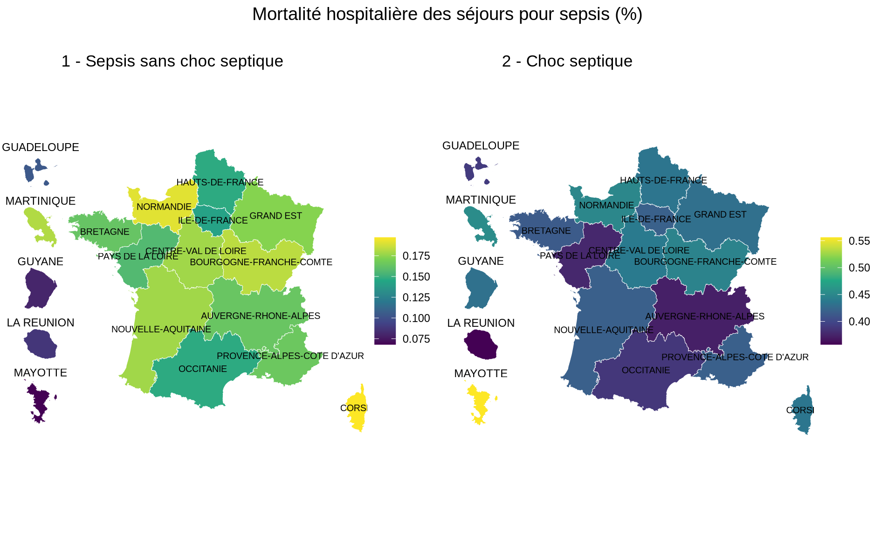
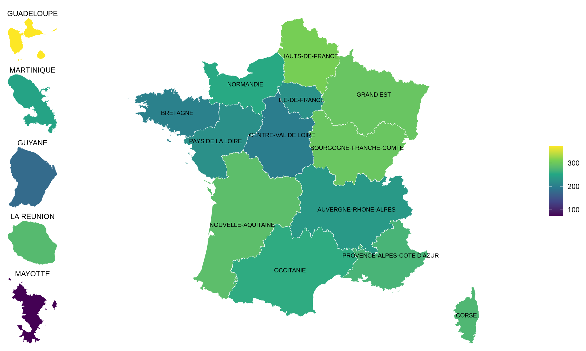

Sepsis is not a single pathogen outcome; it is a severe syndrome emerging from infections plus host response and care pathways. The World Health Organization defines sepsis as life-threatening organ dysfunction due to a dysregulated response to infection and notes it can progress to septic shock and death, especially without early recognition and treatment. In this report, I analyze regional patterns of sepsis hospitalizations in France, using data on hospital stays for sepsis and related indicators. The objectives are to:
Describe the spatial distribution of sepsis hospitalizations and outcomes across French regions.
Explore associations between sepsis hospitalization rates and territorial indicators (socioeconomic, educational and urbanisation indicator from INSEE).
Identify homogeneous regional profiles based on septic shock rates and territorial indicators using clustering methods.
Sepsis hospitalization data: Data provided for this analysis. It records all hospital stays in France stratified by region. The dataset includes indicators such as the number of sepsis stays per 100,000 inhabitants, percentage of deaths among sepsis stays, and average length of stay for sepsis hospitalizations.
Territorial indicators: INSEE data on regional socioeconomic status (median living standard, poverty intensity), education (percentage of population not schooled at age 15 or older), and urbanization (population density). These indicators provide context for understanding regional differences in sepsis hospitalization patterns. The population not schooled at age 15 or older was downloaded at commune level and aggregated to the regional level for this analysis.
Links to data sources:


There is substantial regional variation in sepsis hospitalization rates across France. Guadeloupe stands out as the region with the highest overall sepsis hospitalization rate (number of sepsis-related hospital stays among residents per 100,000 inhabitants), both with and without septic shock, whereas Mayotte shows the lowest rate. This pattern suggests marked territorial differences in the burden of sepsis hospitalization across regions.
The percentage of deaths also varies across the regional septic shock profiles. In the shock-only clustering, Mayotte stands out as the profile with the highest proportion of hospital stays ending in death, whereas Guadeloupe and La Réunion show lower percentages of deaths despite relatively high septic shock hospitalization rates. Most metropolitan regions, together with Martinique and Corse, form a baseline profile with intermediate in-hospital mortality, while Île-de-France shows a similar mortality level within a distinct dense, high-volume urban context. Guyane also presents an intermediate-to-high percentage of deaths within a profile marked by low population density and socioeconomic disadvantage. These differences should be interpreted cautiously, because pct_deces reflects the proportion of sepsis-related hospital stays that end in death, that is, in-hospital mortality per hospitalization episode rather than mortality per individual patient.


The average length of hospital stay (DMS) also differs across the regional septic shock profiles. Île-de-France and Guyane stand out with the longest average stays, suggesting a profile of more prolonged hospital management among septic shock hospitalizations. Mayotte shows the shortest average length of stay. DMS reflects the average duration of hospital stays for septic shock, not the duration of illness per patient, and may therefore capture both clinical severity and differences in care pathways, discharge practices, or access to hospital services.

The mean age of patients hospitalized for septic shock also shows clear differences between regional profiles.Guadeloupe and La Réunion show a younger mean age, while Guyane and Mayotte stand out as the profiles with the youngest hospitalized patients. This indicator should be interpreted carefully, because it corresponds to the average age across all recorded hospital stays for septic shock in the region, and therefore reflects the age profile of hospitalization episodes rather than unique individuals.


The regional comparison suggests that sepsis hospitalization rates tend to be higher in regions with lower median living standards and greater poverty intensity. This pattern indicates that socioeconomically disadvantaged territories may experience a greater burden of sepsis-related hospitalizations.


The regional comparison suggests that sepsis hospitalization rates tend to be higher in regions with a greater share of the population aged 15 years or older who are not in education. This pattern may indicate that less advantaged educational contexts are associated with a greater burden of sepsis-related hospitalizations. However, this relationship remains descriptive and ecological, and may also reflect differences in age structure, socioeconomic conditions, baseline health, and healthcare access across regions.


The regional comparison suggests that sepsis hospitalization rates tend to be higher in more densely populated regions. This pattern may reflect differences in urban concentration, healthcare access, hospital activity, and population composition across territories. However, this association should be interpreted cautiously, as it is based on ecological regional-level data and population density is only a proxy for urbanisation rather than a direct measure of individual risk.
To identify homogeneous regional profiles, I performed hierarchical clustering on a standardized matrix of sepsis and territorial indicators. All numeric variables were standardized to z-scores before analysis so that variables measured on different scales contributed comparably to the distance calculation. Euclidean distance and Ward’s linkage (ward.D2) were used to group regions with similar multivariate profiles.
The number of sepsis hospitalisations and the population density variables were log transform ed to reduce skewness and improve the clustering performance.
Given the absence of two out of three sepsis indicators in the clustering (education and urbanisation variables) in the MAYOTTE region, I decided to exclude this region for the regional profiling based on septic shock rates, and to present the results for the remaining 17 regions. The mean silhouette scores for different numbers of clusters (k) were as follows:
Even though the highest silhouette score is for 2 groups, it largely collapses structure into “one big cluster + outliers.” I therefore present k=4 as the primary “profile” solution because it yields interpretable profiles and isolates outliers that may represent unique regional contexts.


The 4 profiles identified are:
Cluster A: baseline mainland profile with moderate shock rates and mid-range socioeconomic indicators — most metropolitan regions, plus Martinique and Corse
This cluster includes most metropolitan regions together with Martinique and Corse. It is characterized by moderate septic shock rates, an older mean age than the other clusters, and mid-range socioeconomic conditions. Compared with the island and overseas outlier clusters, these regions have more favourable living standards and lower poverty intensity, while remaining relatively similar to each other in their territorial indicators.
Cluster B: higher shock-incidence island profile — Guadeloupe and La Réunion
This cluster is characterized by the highest hospitalization-based septic shock rates among the multi-region groups, with an average of about 108 stays per 100,000 inhabitants. It is also associated with a younger mean age than the mainland baseline cluster and a lower percentage of in-hospital deaths. In socioeconomic terms, these regions show lower median living standard than most metropolitan regions, together with moderately high population density. Overall, this profile suggests an island context with higher observed septic shock burden, younger hospitalized patients, and a less advantaged socioeconomic environment than the mainland reference profile.
Cluster C: very low-density overseas outlier — Guyane
This cluster is distinguished by extremely low population density, a much younger mean age, longer hospital stays, and less favourable socioeconomic indicators than the mainland baseline cluster. At the same time, the observed septic shock hospitalization rate is lower than in the mainland reference cluster. This profile is consistent with a territory where large distances, sparse population distribution, and healthcare access constraints may shape both hospitalization patterns and the measured burden of septic shock.
Cluster D: dense, high-volume metropolitan outlier — Île-de-France
This region stands out because of its very high population density and the largest number of septic shock stays in absolute terms. It also shows the highest median living standard and a longer average length of stay than most other regions. Its septic shock rate per 100,000 is not the highest, but the combination of large hospital volume, extreme urban density, and more favourable socioeconomic indicators makes it a clearly distinct metropolitan profile.
As in the only shock analysis, I choose k=5 as the primary “profile” solution because it yields interpretable profiles and isolates outliers that may represent unique regional contexts.


The 5 profiles identified are:
Cluster A: higher-incidence island profile Guadeloupe
This cluster is characterized by high sepsis stay rates per 100k paired with relatively lower mean age and lower percent deaths in your stay data, alongside moderately high density and lower median living standard than most metropolitan regions.
Cluster B: “baseline” mainland profile with moderate sepsis rates and socio-economic indicators
This cluster includes most metropolitan regions plus Corse characterised by moderate sepsis rates, older mean age, and mid-range socioeconomic indicators. Metropolitan regions are comparatively similar on socioeconomic variables, with some variation in sepsis rates and age.
Cluster C: dense/high-volume metropolitan outlier - Île-de-France
This region stands out by very high density and high stay volume, with high median living standard and a longer dms nuitees relative to most regions. It has a high sepsis rate but also better socioeconomic indicators, suggesting a unique urban profile with high healthcare access and utilization.
Cluster D: very low-density overseas outlier - Guyane
This region is distinctive for extremely low density, younger mean age, high dms nuitees, and worse socioeconomic indicators than the mainland cluster, with a lower sepsis rate than Cluster B in the hospitalization-based measure. The very low density plus large distances can be associated with different access and health care pathways.
Cluster E: extreme-poverty overseas outlier - Mayotte
This region is dominated by extreme poverty intensity and very low median living standard, coupled with a low observed sepsis rate in the hospitalization data, which may reflect underdiagnosis or underutilization of hospital care for sepsis. It also has a younger mean age and high dms nuitees, suggesting a unique profile of sepsis burden and healthcare access challenges. These results should be interpreted with caution given the absence of two out of three sepsis indicators in the clustering (education and urbanisation variables) and the potential for underdiagnosis in this context.